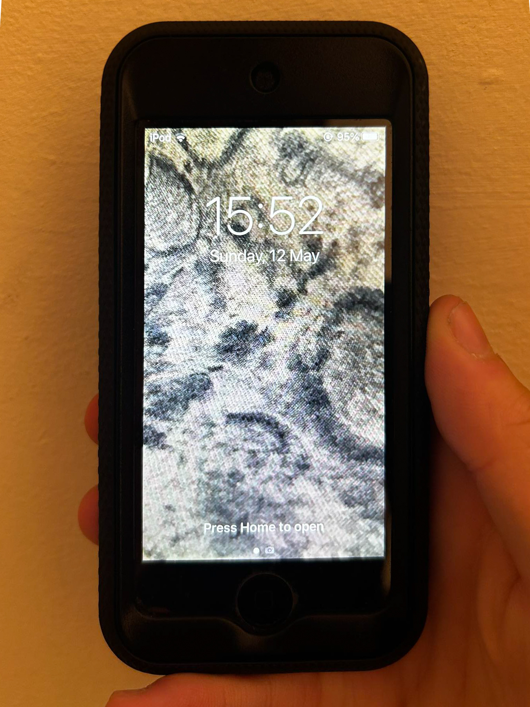
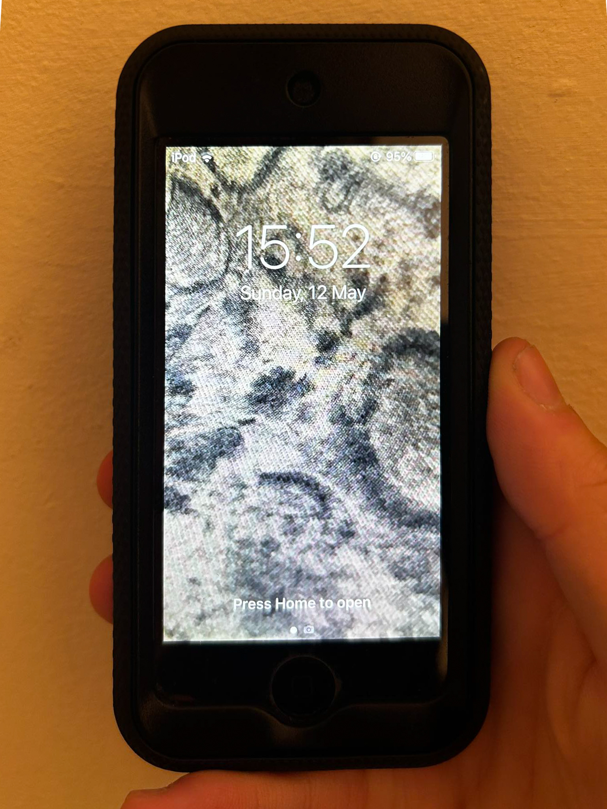

exploring the world of how one can interpret and showcase a visual with the use of fabrics and
materialism. it dives into the abstract 3D feel, and represents the type of fabric one model has.
it also cuts from the idea of using any professional equipment, but only the ipod being used in the
store. it still is a good camera, and can finely capture the details of the fabric well. still helps one
dive into the material aesthetic, as its the whole screen background of the ipod's lock screen and home
interface.
phone backgrounds can play well to make your phone look better or describe who you are, what style you
like as an aesthetic. and the idea behind this was to combine their ipod screens visually with what the
industry is all about, fashion, different use of fabrics and colours.
as a graphic designer, this has helped me explore the variety of fabrics, and how one can impactfully
make use for any design purposes. i looked around the shopfloor, to find some of the best-looking
materials/textures at the ZARA store. With its own ipod camera, i tried to find the right angle for a
better clarity and depth to the overall picture so that it looks more pleasing as well.
 
